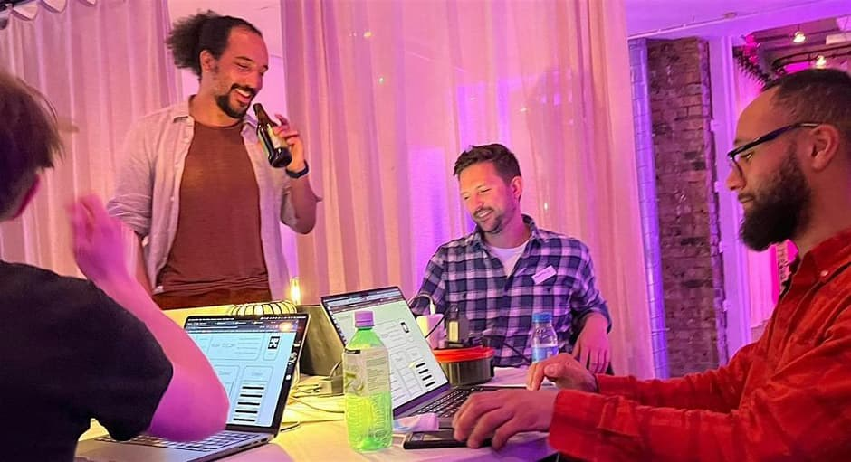
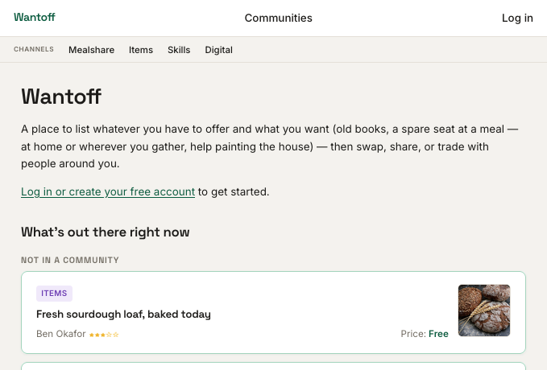

2026
A Circles
Group at
SPACE4
Bringing the trust graph into a room, in London.
Proposal for Circles / Gnosis
Wantoff × SPACE4 × Circles
Boost Circles
with events
Newbies need IRL experience, real use, to really grasp Circles.
- Host a Circles group at SPACE4, a London coworking space
- First run: 2–5 in-person evening events, e.g. recent web3 game night. Ambassador supports users
- Circles-curious people learn by doing: onboarded into the trust graph, face to face
- Trial with Wantoff, a surplus exchange app (Circles Garage winner), back online as an MVP: likely what we'll actually use

Format of
the evening
Short presentation
A relevant topic each time, technical or protocol-adjacent.
Live onboarding
Wallets and trust-building, done in person, on the spot.
Social exchange
Trade there and then, or list it on Wantoff to follow up.
Events ~2 months apart, so people who miss one can catch the next. Wantoff keeps it alive in between.
Why this
location
- London is a global, trend-setting tech hub
- SPACE4 is a physically co-present community, existing trust in the space. Tech co-ops and social enterprises call it home
- Trust made in person > trust clicked through
- Wantoff gives CRC a home
Outputs
- 01
Case study
Accounts, trust edges, exchanges, CRC volume. Metrics-backed.
- 02
Trust cluster
Rooted in real relationships, not a one-off airdrop cohort.
- 03
UX feedback
From real, first-time users, hitting real edges, watched in person.
- 04
Open template
Reusable by any other Circles community, start to finish.
Run 2–5 events → review → continue, expand, or stop
Ambassador supports
community
Matthew Linares — dreamt of Circles long ago.
A long-standing web producer, community manager and SPACE4 member — well placed to host the London Circles community.
- Built and runs Wantoff, the exchange app this proposal trials: the Circles Garage winner from slide one
- Role: hosts each evening, leads onboarding and trust-building, keeps the board alive between events
- This is the organiser time the ask (next slide) actually covers
What we need
- 01A Circles-side contact for tech integration, general support
- 02Small grant or infra support: ~£2–5k for organiser time and sundries
- 03Promotional support to help attract participants
This is a flexible proposal – the above is illustrative.
Circles changes what money can be.
Let's give people a place to find out, in person, by using it.
matthewlinares@protonmail.com
Appendix — Wantoff's status
- Early MVP for Circles Garage — functional, lightly tested, not hardened. Needs work to maintain and make it slick
- What this proposal actually needs is minimal: a place to list, claim, and track exchanges — the MVP already covers this
- Hardening it further for this project is nice-to-have, not blocking

Without Wantoff
A basic exchange space — shared doc, board, or chat channel — could still run the trust-building and exchange format end to end, as a fallback if uptime or maintenance becomes an issue.
Wantoff meaningfully boosts outcomes — structured listings, reputation blended with trust — and is now the working assumption, not just an upgrade path.